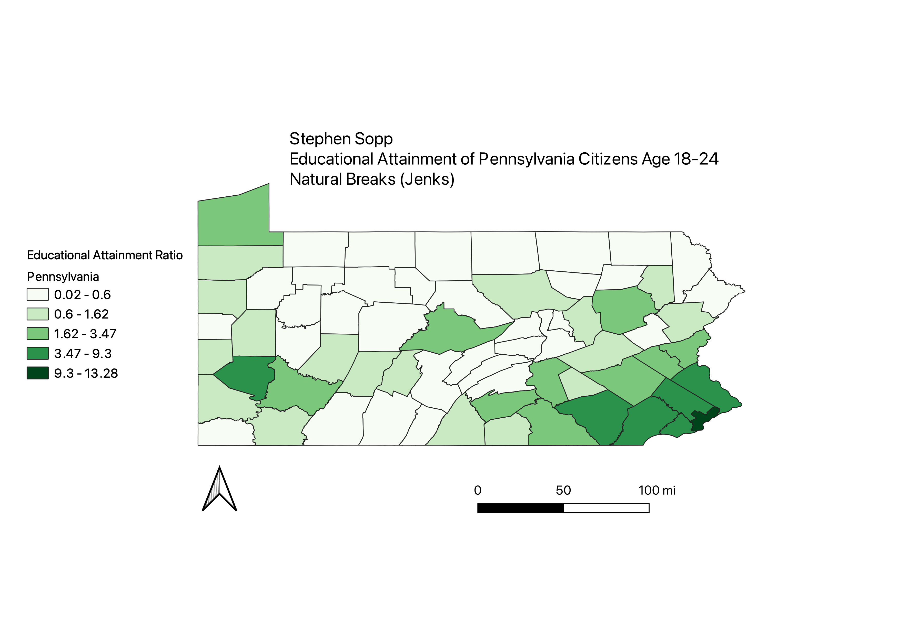

Homework 6.2
Creating the ratio for this homework was achieved by summing all of the county populations to get the state of Pennsylvania's total population. Then in excel, I divided each county's population by the total state population and multiplied that number by 100. The map and each of the ratio's depict educational attainment of citizens age 18-24 of Pennsylvania. I found it interesting how each of the different classification methods produced vastly different maps. Population was a large factor for equal interval as the county that Philadelphia is in was the only dark color. Natural break and equal interval I feel did a better job at accurately depicting what the educational attainment of Pennsylvania truly looks like.
Natural Breaks

The natural breaks mode with 10 classes represented the educational population throughout the state of Pennsylvania. 10 classes was choosen because of the state's 67 counties, which gives approximately 7 counties per classification. The natural breaks gives a slightly accurate representation compared to the other two modes. The population is dense in the city centers of the state while also representing population within more rural parts of the state.
Equal Count
The equal count mode with 10 classes represented the educational population as well but showed a different picture. Here more counties even on the outskirts of the city appeared to have high population densities. I believe that this is the best representation of the state because of the even distribution of the colors throughout the state.
Equal Interval
Finally equal interval is the least accurate out of the 3 modes. Here the one of the smallest counties of Pennsylvania is the only one in dark green because it is where the city of Philadelphia is. This makes the other counties in the state look uninhabited.
Data used for this project
CSV dataset
Link to shapefile